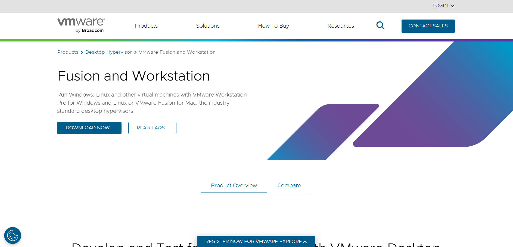
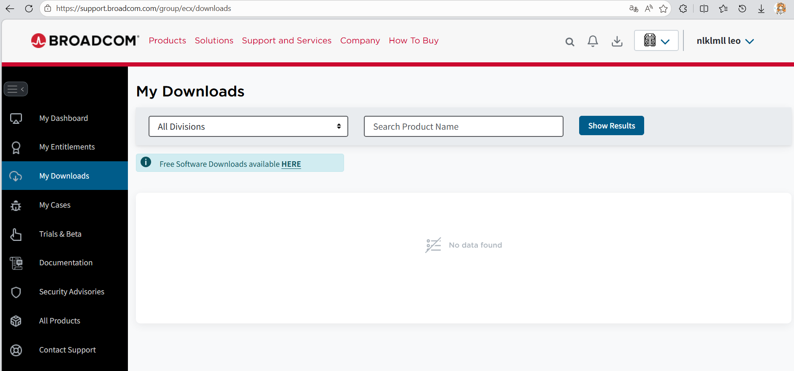
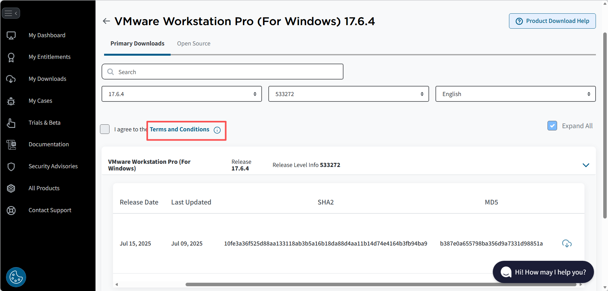

打开官网链接： Fusion and Workstation | VMware

点击 download now
VMware 已经被 Broadcom 收购，需要注册一个博通账号，最好用国外域名的邮箱，后面会讲为什么。
登录后进到以下页面，点击 HERE

拉到最下，选择 VMware Workstation Pro。
选择需要的版本（这里以 17.6 版本为例）
需要先点击 Terms and Conditions，不用仔细看这个条款，直接回到原页面再勾选左边方框同意条款和协议。

然后就能点击云朵标志开始下载

如果提示：
Account verification is Pending. Please try after some time是因为账户原因，更换一个邮箱注册新的账户（最好是外国邮箱）再次尝试。
下载成功后打开安装程序，根据提示一步步安装即可。